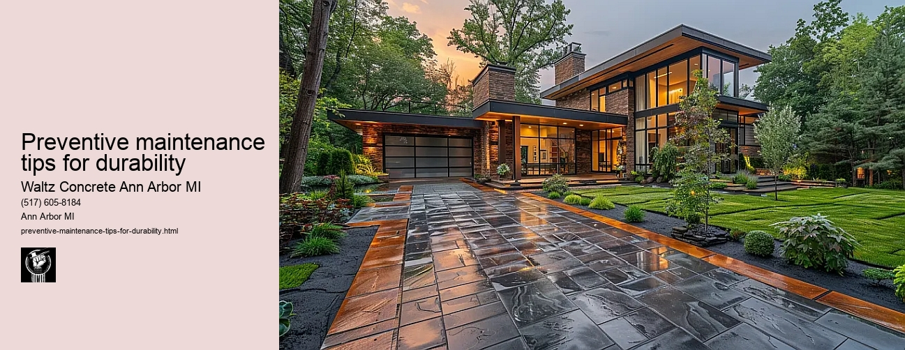

News
Concrete Driveway Installation Ann Arbor Mi
Concrete Driveway Installation Ann Arbor Mi
Choosing the right contractor for installation
Cost of concrete driveway installation in Ann Arbor
Permit requirements for driveway installation in Ann Arbor
The process and timeline of concrete driveway installation
Different types of concrete used in driveways
Maintenance and Repair of Concrete Driveways in Ann Arbor Mi
Maintenance and Repair of Concrete Driveways in Ann Arbor Mi
Preventive maintenance tips for durability
Common causes for concrete driveway damage
Professional companies offering repair services in Ann Arbor
Doityourself versus professional repairs
Costs associated with repairing a concrete driveway
Designs and Styles of Concrete Driveways in Ann Arbor Mi
Designs and Styles of Concrete Driveways in Ann Arbor Mi
Popular design trends for driveways
Considering climate factors when choosing a design or style
Unique customizations available for concrete driveways
Influence of home architecture on driveway design
Stamped stained and decorative options
Environmental Impact of Concrete Driveways in Ann Arbor Mi
Environmental Impact of Concrete Driveways in Ann Arbor Mi
Carbon footprint associated with concrete production
Use of sustainable materials in concrete driveways
Drainage considerations to reduce environmental impact
Local regulations regarding environmentally friendly driveways
Potential use of permeable or porous pavement
Alternatives to Concrete Driveways in Ann Arbor Mi
Alternatives to Concrete Driveways in Ann Arbor Mi
Asphalt driveways and their proscons
Paver stone driveways and their benefitsdrawbacks
Gravel or crushed stone as an alternative option
Comparing costs between different driveway materials
Resinbound surfaces as emerging technology
About Us
Contact Us

Preventive maintenance tips for durability
Preventive maintenance tips for durability
Preventive Maintenance Tips for Durability
The purpose of preventive maintenance is to keep your assets in good operating condition and prevent any potential breakdowns. It involves regular, routine cleaning, adjustments, inspections, and replacements that help reduce equipment failures and increase the durability of your machines. This concept applies not only to heavy machinery but also to personal items such as cars, computers, and household appliances.
To begin with, one of the most common preventive maintenance tips is regular inspection. Be it your car or your computer; a frequent examination can help spot small problems before they escalate into more serious issues. For instance, when you check your vehicle regularly, you can identify if there's low air pressure in tires or if oil levels are low. Addressing these minor issues early on will prolong the life of these components and enhance the overall durability.
Cleaning is another crucial aspect of preventive maintenance. Dust and dirt accumulation can significantly damage various parts of machines by causing overheating or corrosion over time. Therefore, ensure that you clean devices like computers and air conditioners frequently to keep them functioning efficiently for longer durations.
Furthermore, lubrication plays an essential role in maintaining the durability of machines with moving parts such as engines or elevators. Without proper lubrication, friction between metal parts would cause wear and tear leading to decreased performance over time.
Replacing worn-out parts is yet another critical tip for preventive maintenance that ensures durability. All equipment has certain components known for wearing out over time due to continual use batteries in a laptop or filters in an HVAC system being prime examples. Timely replacement not only maintains efficiency but also prevents possible damage to other interconnected components.
Moreover, using quality spare parts cannot be overlooked while discussing preventive maintenance tips for durability. Although opting for cheaper alternatives might seem beneficial initially from a cost perspective; their inferior quality could lead to frequent breakdowns resulting in higher costs long-term.
Lastly but importantly, always consult user manuals provided by manufacturers. These guides typically contain specific maintenance recommendations for the respective equipment, which if followed, can enhance durability significantly.
In conclusion, preventive maintenance is a small investment of time and resources that pays off in the long run by enhancing durability and extending the lifespan of your assets. It saves you from unnecessary repair costs and reduces downtime due to unexpected breakdowns. So whether it's your personal car or a piece of heavy industrial machinery - remember, a little care goes a long way!
Maintenance and Repair of Concrete Driveways in Ann Arbor Mi
Preventive maintenance tips for durability
Frequently Asked Questions
What are some preventive maintenance tips to increase the durability of my concrete driveway?
Some tips include regular cleaning to remove stains, resealing the surface every few years to protect it from weather damage and wear, and avoiding heavy loads on the edges which can cause cracks or chipping.
How often should I reseal my concrete driveway in Ann Arbor, MI for optimal durability?
Generally, you should reseal a concrete driveway every 2-3 years. However, factors such as the amount of traffic it handles, its exposure to extreme weather conditions and quality of previous work may affect this timeframe.
What products or methods should I use to clean stains without causing damage to my concrete driveway in Ann Arbor, MI?
Use mild detergent or specially designed concrete cleaners for routine cleaning. For oil stains or stubborn spots, consider using a pressure washer with appropriate settings not to damage the surface. Always remember to rinse off any cleaning solutions thoroughly.
Preventive maintenance tips for durability